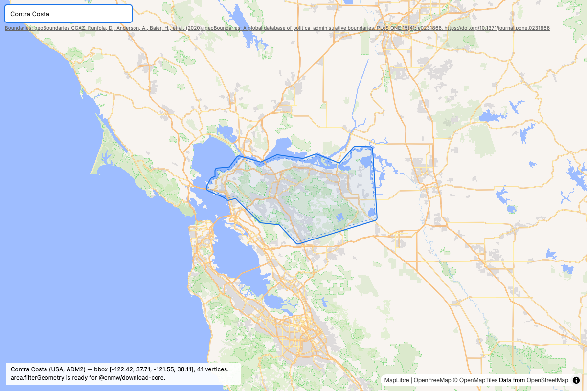
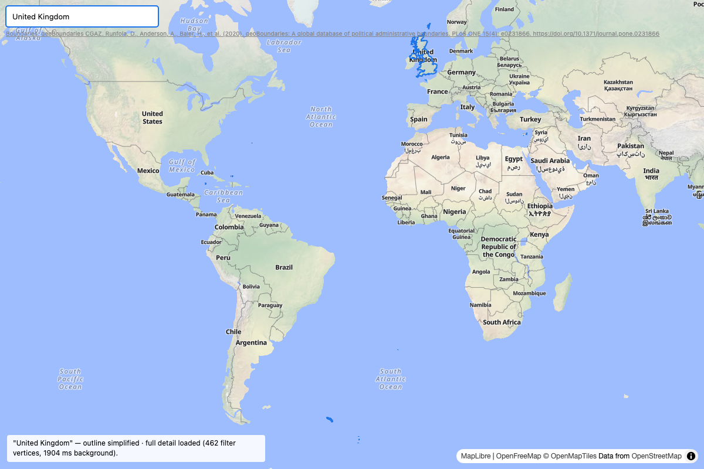
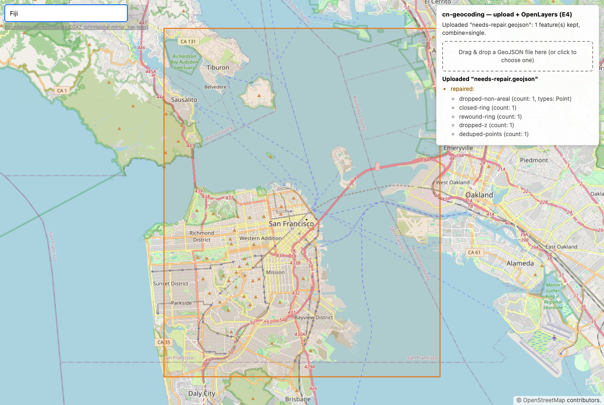
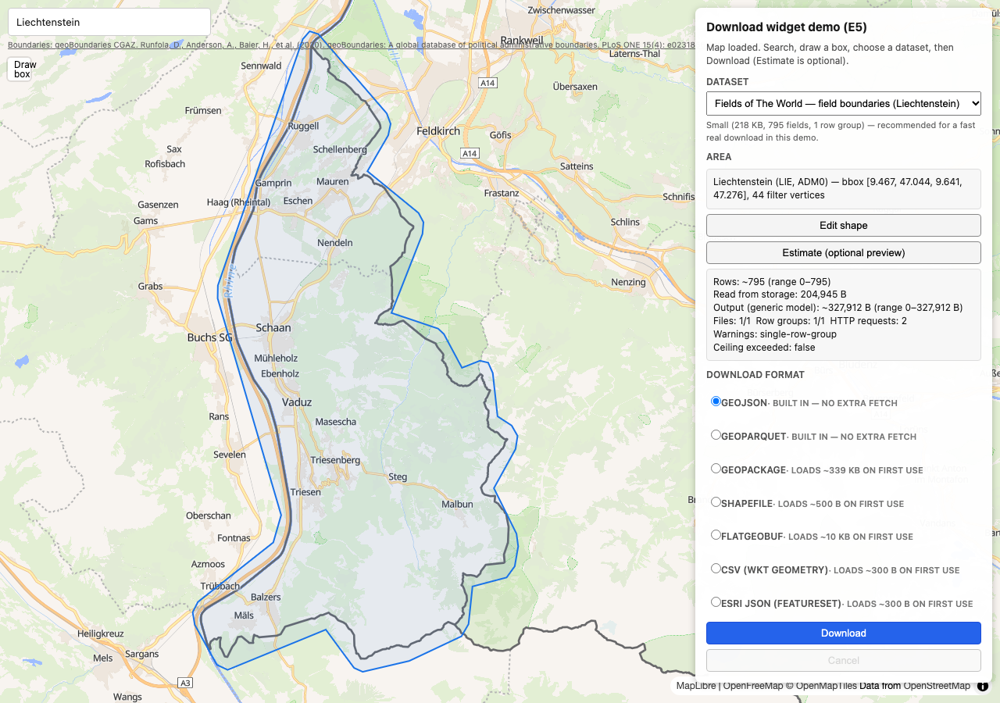
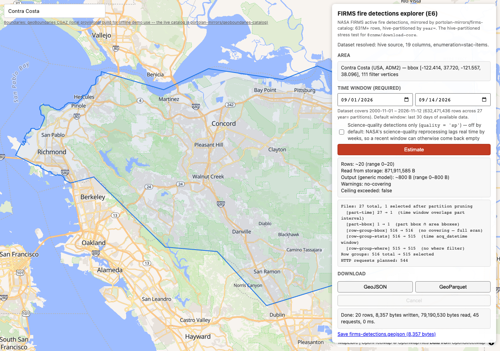
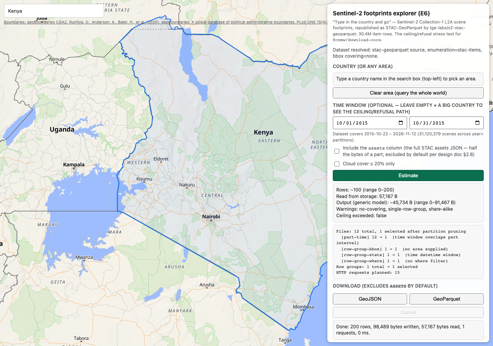
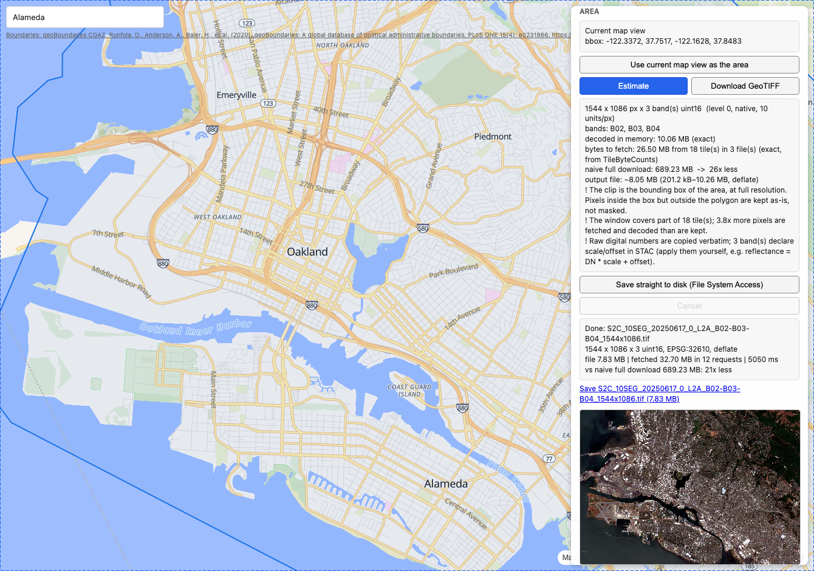

Seven zero-build demos of @cngeo/*: place-name search over a published
cloud-native gazetteer, your own uploaded area, and dataset download — all static
files against object storage, no API and no server anywhere.
Range requests, which is the whole
reason these work as static files.
python3 serve.py and open
http://localhost:8000/examples/. A plain python3 -m http.server will
not do — it answers HTTP Range requests with the whole file, which quietly
turns every range read into a full download.
data.source.coop, so it needs network
access. Add ?index=overture on geocoder-demo for the 5.6M-name Overture
gazetteer. ?index=local uses a provisional offline index in
geocoder-demo/data/ — that directory is gitignored, so it is a clone-only option and
will 404 on the published site.

The whole library in one 90-line file: an import map, one Geocoder pointed at the
live geoBoundaries gazetteer, one GeocoderControl on a MapLibre map. Type
“contra costa”, get an outline. This is the snippet the root README's quickstart reproduces
verbatim; verify.mjs drives it against live data on every check.

The geocoder at full depth: all three admin levels of the live catalog, progressive
select({ resolution: 'both' }) (small outline now, full-resolution filter
geometry upgraded in the background), and an index switch — ?index=overture
swaps in the 5.6M-name multilingual Overture gazetteer.

The composability seam, on OpenLayers: a searched area and a dropped GeoJSON file produce
the same Area object. Drop
upload-demo/fixtures/needs-repair.geojson to see the repair report (unclosed
ring, wrong winding, a stray Z, a Point dropped), and search “fiji” to watch the
antimeridian split and the 4326 ⇄ 3857 projection bridge.

Search an area, estimate, download. Three real remote datasets (Fields of The World Liechtenstein and Netherlands, geoBoundaries CGAZ ADM2), both bundled writers, the ceiling refusal path, cancel, and a progress bar. The estimate reads parquet footers only — the Liechtenstein one costs 2 HTTP requests.

NASA FIRMS active fire detections: 632 million rows across 27 year= partitions,
resolved straight from the collection JSON. Shows the full pruning cascade narrated stage by
stage — 27 files to 1 on the time filter alone — on a point dataset with no bbox covering
column, which the estimate says out loud.

“Type a country, download every Sentinel-2 scene footprint over it.” 30.4M STAC-GeoParquet
item rows; a whole country with no time window trips the ceiling and waits for an explicit
acceptCeiling(), and the fat assets column is excluded by default
so a footprint download does not pay for it.

The same Area, pointed at pixels. Open a remote Sentinel-2 COG or STAC item and
one header read tells you its size, dtype, CRS, overviews and bands; pick the bands you want
and save a clipped GeoTIFF. Windowed range reads, an exact pre-download size, a memory
ceiling — still no server.
Each demo ships a Playwright script that drives it against live data and regenerates the
screenshot above. Start serve.py first, then pass it the port:
| Command | What it proves |
|---|---|
node examples/quickstart/verify.mjs 8000 | The README quickstart loads the live index, searches, selects, and renders attribution. |
node examples/geocoder-demo/verify-live.mjs 8000 | ADM0, ADM1 and ADM2 all resolve against the published catalog, with real network timings. |
node examples/geocoder-demo/verify-progressive.mjs 8000 | resolution: 'both' returns early and upgrades filterGeometry in the background. |
node examples/geocoder-demo/verify-upgrade-display.mjs 8000 | upgradeDisplay: true: the "loading full detail…" notice, cancelUpgrade() keeping the simplified outline, and the un-cancelled outline swap (by vertex count) with no long task over budget. |
node examples/upload-demo/verify.mjs 8000 | Antimeridian search + a repaired GeoJSON upload, both drawn through the OpenLayers adapter. |
node examples/download-demo/verify.mjs 8000 | estimate() then a real GeoJSON and GeoParquet download of FTW Liechtenstein. |
node examples/firms-explorer/verify.mjs 8000 | Collection-JSON resolution, partition pruning, and a real download from a 632M-row table. |
node examples/s2-footprints/verify.mjs 8000 | The ceiling refusal, acceptCeiling(), and the default column projection. |
node examples/raster-demo/verify.mjs 8000 | A COG header read, band selection, the raster size estimate, and a real clipped GeoTIFF. |